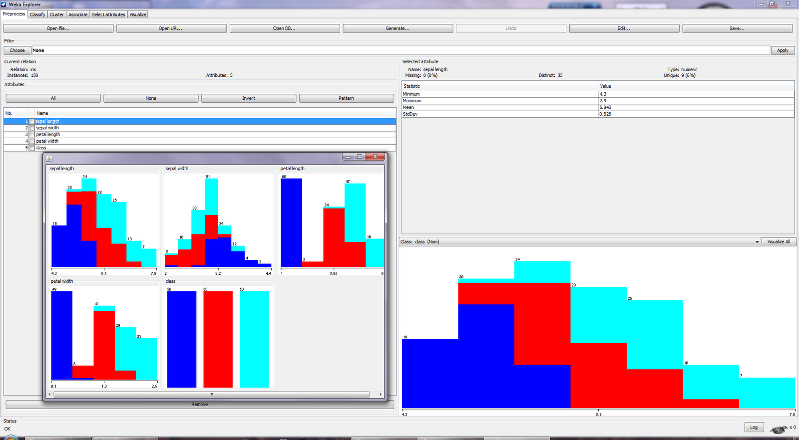
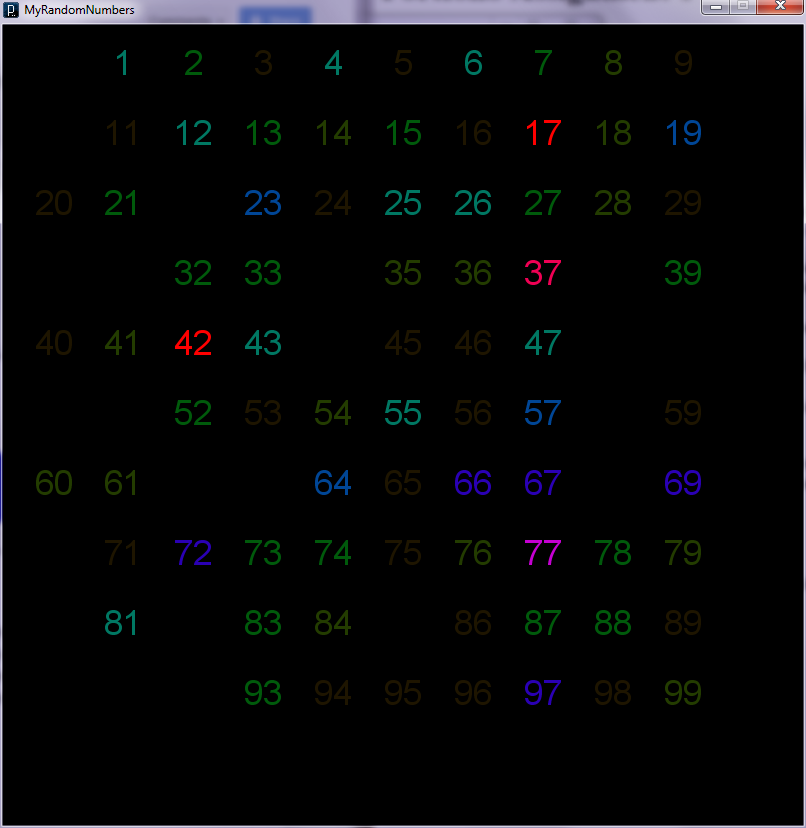

Data and data quality are two of the most important aspects of data mining. Without good data it does not matter how fancy your algorithm is it will not return meaningful results unless the data is of a workable quality. Understanding the data itself is the first step to the data mining process. This is because with out a clear understanding of the domain you are working with you will not be able to produce good results. In the following document I will describe different data set types and attribute types. As well as a discussion on data quality, exploring data, and visualizing data.
A record data set is a data set where you have a collection of record. Each record has a fixed-set of attributes. Each record will have the same set of attributes as well. An example of a record based data set is market basket data. In market basket data each row represents a customers transaction at a store.
Graph-based data sets is a data set where either there is relationships among the objects or the data itself is stored as graphs. An example of this data set is a data set of molecular structures. Each molecule is stored as a graph in the data.
Ordered data sets are data sets where the attributes in the data objects have relationships that have some order in time and/or space. An example of this data set is time series data where each object comes after the one before it in time. One side effect of ordered data sets is that records near each other will commonly have high similarity. In time series data this is known as temporal correlation.
Nominal attributes are attributes that are only differentiated by names. They only have enough information to tell one object from another. An example of a nominal attribute is ID numbers. The number is meaningless; however, you can tell one object from another. Nominal attributes are also sometimes referred to as Categorical or Qualitative attributes.
Ordinal attributes are attributes that provide enough information to order them. An example of an ordinal attribute would be a grade in a class. A grade of "A" is greater than a grade of a "C". Ordinal attributes are also known as Categorical or Qualitative attributes.
Interval attributes are attributes which the difference between that values are meaningful. A good example of these are temperatures. The difference between 3 degrees Fahrenheit and 300 degrees Fahrenheit is meaningful. Interval attributes are also known as numeric or quantitative attributes.
Ratio attributes are attributes where both differences and ratios are meaningful. An example of a ratio attribute is mass. Something that has a mass of 300 kilograms is 3 times heavier and 200 kilograms more than a mass of 100 kilograms. Ratio attributes are also known as numeric or quantitative attributes.
Discrete attributes are attributes that have a finite set of or countably infinite set of possible values. These are often represented with integers. A special case of a discrete attributes are binary attributes where only two possible values exist 0 or 1. Usually nominal and ordinal attributes will also be discrete attributes.
Continuous attributes are attributes that are represented by real numbers. Commonly interval and ratio attributes are continuous as well.
Asymmetric attributes are attributes where only the presence of a non-zero value has meaning.
Data quality can be affected negatively from several common sources. First, measurement and collection errors can occur. These errors occur when the recorded value of an attribute is different from the true value of the entity being measured. These errors can be from equipment used to measure entities. A common way of dealing with these problems is to know the accuracy and precision of your measuring tools. As well as only recording a significant number of digits.
Another common data quality issue is outliers. Outliers (or anomalies) are data objects that differ from greatly from the typical data. An example is the height of a person in a record that is 3 meters tall. Outlier does not mean a measurement error occurred, but that the data object is outside the norm.
A third data quality issue is missing values in the attributes of a data object. Data objects with missing values can either be eliminated from the data set, estimated, or ignored.
Inconsistent values are another data quality issue. An example of an inconsistent in a data object could be that a person has a negative height. Inconsistent values are handled similarly to missing values.
A final data quality issue is duplicate data. When one data object is very similar to another you may have duplicate data. It is important when dealing with potentially duplicate data to make sure that the objects are duplicates and not just very similar. Duplicates are handled by removing all the duplicates of an object.
Exploring data is the very important first step of the data mining process. It is important because without first exploring your data you may miss key characteristics of the data set that could be used in your analysis. You can begin exploring your data with common summary statistics like mean, median, mode, and standard deviation. Data mining tools can be very useful in this process as seen below.
Figure 1. Graphs of the all the attributes in the Iris Data set.
Data visualization is commonly the last step in the data mining process. After performing analysis and getting some meaningful results it is usually required to change the data into a visualization so a person not familiar with the data can easily examine the results. Visualization can also help find relationships that your analysis might have missed because of how skilled the human brain is at pattern recognition.
Figure 2. Visualization of Random Numbers chosen by people on twitter.